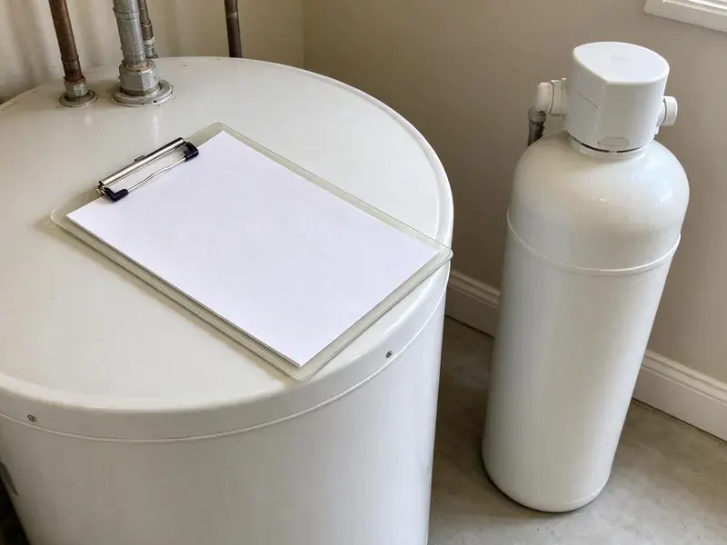

Polybutylene Plumbing Replacement in Roanoke, VA
Gray plastic pipe stamped PB2110 at the water heater? FBN Plumbing replaces it before it fails in Roanoke, VA.
- Code Compliant Work
- Fast Free Poly Pipe Inspections
- Permits and Inspection Included
- Full System Replacement

Replace Polybutylene Pipe Before It Bursts in Roanoke, VA
We look at the heater, sinks and main shutoff and tell you what we find.
Polybutylene Plumbing Replacement for Virginia Homes in Roanoke, VA
FBN Plumbing sees polybutylene in a lot of homes built during that era. Chlorine and chloramine in treated water attack the pipe from the inside, so it can look fine from the outside right up until it splits. No warning signs. Hot water lines and fittings usually go first, since heat speeds up the breakdown.
Some of what we do:
- Yard service line replacement from the meter to the house
- Accurate identification of poly pipe and fittings
- Full home replacement with PEX or Type L copper

Additional Plumbing Maintenance Services in Roanoke, VA
Our maintenance and specialty plumbing services in Roanoke, VA protect your home year-round and extend the life of every system.


Customers
Why Choose FBN Plumbing for Polybutylene Plumbing Replacement in Roanoke, VA?
Polybutylene gives little warning before it fails, which is the whole problem with leaving it in Roanoke homes. A planned replacement lets you pick the week.
- Steady Water, New pipe means steady flow without wondering which fitting goes next.
- Clean Worksite, Floors and furniture get covered, and we sweep and vacuum before leaving.
- Insurance Friendly, You get the permit record, photos and invoice insurers and buyers ask for.
Citywide Coverage
Our poly replacement crews serve every neighborhood in Roanoke. Free inspections come to you.
Experienced Team
Our plumbers have replaced polybutylene in hundreds of homes and know how to trace lines through attics, walls and slabs. Few runs get missed. Behind panels, inside cabinets and above garages is where poly gets missed, and our plumbers check every one of those spots.
Safety-First Approach
Safety starts with protecting your house during the work. Floors and furniture get covered. Our crews use dust control when cutting drywall, work from proper boards in the attic and keep tools and materials out of walkways so your family can move around the house safely each evening.
Trusted Certified Roanoke Plumbing Services Professionals
At FBN Plumbing, we are proud to offer certified plumbing services throughout Roanoke, VA. Those papers on the wall mean something. Every repair, install and maintenance visit follows strict safety and quality rules, and the plumbers doing the work carry recognized industry credentials.
Call Us Now PHCC Plumbing Contractor Recognition
PHCC Plumbing Contractor Recognition Better Business Bureau (BBB) Accreditation
Better Business Bureau (BBB) Accreditation Angi Certified Pro
Angi Certified Pro ISO 9001 Quality Management Certification
ISO 9001 Quality Management CertificationHow We Replace Polybutylene in Roanoke, VA
Yard Service Line Replacement in Roanoke, VA
Many poly-era homes also have a blue or black polybutylene service line running from the water meter to the house. Buried poly service lines split, run up bills and saturate the yard. Utilities get marked first. After locating, we trench, lay new PEX or copper and tie it into a new main shutoff at the house.

Permits for Polybutylene Replacement in Roanoke
A whole-house poly replacement in Roanoke is a repipe, and it usually needs a plumbing permit. We file it. The inspector looks at the new lines with the walls still open, checking supports, nail plates, shutoffs and the pressure test before anything is patched. That record helps later with insurance and resale.
Polybutylene Checks for Home Sales in Roanoke, VA
Buying or selling a house built between about 1978 and 1995 in Roanoke, VA? Check for poly. We look at the pipe at the water heater, under sinks, at the main and in the attic, read any stamps and give you a written finding and a replacement estimate. Buyers use it to negotiate.
Manufactured Home Poly Replacement in Roanoke, VA
Manufactured homes from the poly era often have polybutylene lines in the floor or the belly underneath. New PEX gets sized for the home and strapped to the frame. We check underneath. Most Virginia winters bring several hard freezes, and cold snaps can burst pipes in crawlspaces, garages and exterior walls. Heat tape and insulation on exposed runs get inspected and replaced where needed, so the new supply lines are protected under the home.
Polybutylene Identification and Inspection in Roanoke
Polybutylene is usually gray, though it can be white, blue or black, and is often stamped PB2110. Check the heater first. You may also see it under sinks, near the main shutoff or coming through the garage wall, and we trace runs through the attic to confirm how much of the house it serves.
Copper Replacement for Polybutylene in Roanoke, VA
Some homeowners in Roanoke, VA want copper when they take out polybutylene. That works fine. Our copper replacements use thicker Type L pipe with lead-free soldered or pressed joints, not the thinner Type M. Expect a higher price and a slightly longer job with copper, in exchange for good heat and UV tolerance and a long history.
Emergency Polybutylene Pipe Repair in Roanoke, VA
A burst poly fitting can push water across a floor or through a ceiling in minutes. Shut the main first. Our plumber stops the leak, replaces the failed section or fitting with a temporary repair that gets water back on and then schedules the full replacement so you are not rushed into a decision. Photos of the failure help with your insurance claim.

Finding Polybutylene Leaks in Roanoke
A poly leak inside a wall or ceiling can run for days before you see a stain. Watch the water meter. If the meter's leak dial moves with everything off, we track the leak down with acoustic equipment and thermal imaging instead of guessing. Finding it lets us make a temporary repair and plan the full replacement.
Polybutylene Plumbing Replacement Near Me in Roanoke, VA
Local crews know the Virginia housing stock, including which builders used poly and where they ran it. That speeds up the estimate.
Living in Roanoke, VA, you want a plumber who knows local homes and local permits. We pull repipe permits here regularly. That keeps inspections on schedule, so walls get patched on time and the job finishes when we said it would instead of stretching into a second week.
FBN Plumbing at a Glance
- Licensed and insured plumbers serving Roanoke, VA
- 24/7 emergency service with same-day scheduling
- Clear written estimates, no hidden fees
- 4.9-star rated by 798+ Virginia customers
Roanoke Map
Roanoke Information
- Population
- 97,171
- Area codes
- 540/833/571
- Service area
- Roanoke and towns within a 40 mile drive
- Nearby
- Blacksburg, Lynchburg, Charlottesville, Harrisonburg
Homes in Roanoke, VA built from the late 1970s to the mid 1990s often still have polybutylene supply pipe. Housing in Virginia spans centuries, from historic homes with cast iron and galvanized pipe to newer subdivisions plumbed with PEX.
Expert Services
Reach out to FBN Plumbing for reliable plumbing work done by licensed pros in Roanoke, VA.
Our Specialized Plumbing Services in Roanoke, VA
At FBN Plumbing, we handle the full list of plumbing services across Roanoke, VA. We go from leak detection all the way to full system installations, for homes and commercial buildings, and we do it quickly at a fair price. Explore our core services below:


The Poly Pipe Replacement Process in Roanoke, VA
Here is how we replace polybutylene in a Roanoke, VA home, step by step.
Schedule a Visit
Call FBN Plumbing at (434) 230-6997 to book a free visit. We look at your pipe and talk through your options.
Inspect and Quote
Our plumber identifies all the polybutylene in the house and gives you a written price.
Replace the Pipe
Once you approve, our crew takes the old pipe out of service and installs new PEX or copper, one area at a time.
Frequently Asked Questions About Polybutylene Plumbing Replacement in Roanoke
Most PEX replacements of polybutylene cost $5,000 to $12,000 for an average home. Copper costs more, and yard service lines often add $1,500 to $4,000.
Chlorine and chloramine in treated water break down the plastic from the inside, making it brittle. Fittings and hot water lines often fail first.
Gray, blue or black plastic pipe marked PB2110 at the water heater or under sinks is the clearest sign. Age is another. A house from roughly 1978 to 1995 with this pipe and a past fitting leak should be replaced before the next failure.
Both are good choices. PEX usually costs less. PEX bends, handles freezes and movement and goes in quickly, and copper is stiff, heat tolerant and long proven, so it comes down to budget, water and preference.
Private wells serve many rural Virginia homes, and some well water carries iron, manganese, low pH or sulfur that calls for treatment. Hard water does not cause poly to fail the way chlorine does. It adds scale. Mineral scale cuts flow and adds strain to brittle pipe, which is why a softener loop during the repipe can make sense in hard water.
Most policies do not pay for replacing old pipe, though they may cover sudden water damage. Certain insurers surcharge or refuse homes with poly.
Our poly replacements carry a written warranty on materials and labor. Details are written up front. PEX-A jobs done by certified installers also get the maker's long-term warranty, which we register on your behalf.
In most cases, yes, a plumbing permit is required for full repiping in Roanoke. Our office handles it. That includes the application, the rough-in inspection with the walls open and the final sign-off, so you do not have to deal with the paperwork or the scheduling.
What Our Customers Say About Our Plumbing Experts

Sofia M.
Two new toilets went in during one visit. The tech set them on new wax rings and swapped the old supply lines. He also noticed our bathroom faucet dripping and replaced the cartridge while he was there. No mess left behind.
Toilet Installation · Tuckahoe, VALaura S.
Our 40 gallon tank started leaking from the bottom after thirteen years. The tech hauled the old one out, set a new unit with a fresh expansion tank, and had hot water running in about four hours. He took the old tank with him too.
Water Heater Replacement · Tuckahoe, VA
James P.
Our restaurant had a slow leak at the hand sink that was rotting the cabinet base. FBN Plumbing came in at six in the morning before prep, replaced the trap and both supply lines, and was packed up before my first cook clocked in.
Commercial Plumbing · Charlottesville, VARobert G.
The camera showed a full break in our clay sewer line near the street. FBN Plumbing replaced it with a trenchless pipe burst, so the only digging was two small pits in the yard. They let us watch the footage before and after.
Sewer Line Replacement · Roanoke, VAMarcus H.
Grease from the fryer line kept clogging the kitchen drain at my diner. FBN Plumbing hydro jetted the line after closing, showed me the buildup on camera, and set us up on a quarterly cleaning so it does not catch us on a Friday again.
Drain Cleaning · Richmond, VA
Paul B.
Our pit pump ran nonstop even in dry weather. The plumber found the check valve was stuck open, so the same water kept cycling back into the pit. New valve, new float switch, done in an hour. It runs quiet now.
Sump Pump · Roanoke, VA